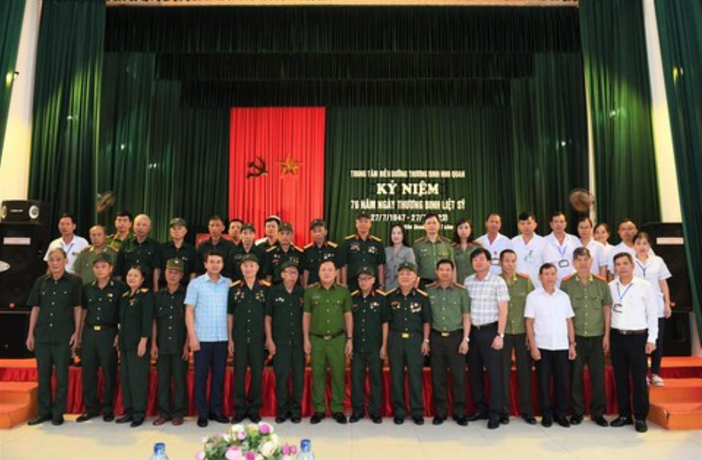

Hiện nay, Trung tâm Điều dưỡng Thương binh Nho Quan đang quản lý, chăm sóc, nuôi dưỡng, điều trị, phục hồi chức năng và thực hiện các chế độ chính sách cho 147 người đến từ 22 tỉnh, thành trong cả nước, trong đó có 68 đồng chí thương binh, bệnh nặng; 23 người hoạt động kháng chiến và con đẻ của họ bị nhiễm chất độc hóa học; số còn lại là đối tượng bảo trợ xã hội.
Mặc dù còn nhiều khó khăn nhưng tập thể lãnh đạo, các bác sỹ, điều dưỡng và cán bộ viên chức của Trung tâm đã phát huy sức mạnh đoàn kết, cố gắng, trách nhiệm, thực hiện tốt nhiệm vụ điều trị, quản lý, chăm sóc phục hồi, do đó đến nay thương tật và sức khỏe của các đồng chí thương, bệnh binh đã dần ổn định.
Trong bầu không khí ấm áp, Thứ trưởng Nguyễn Văn Long đã ân cần thăm hỏi sức khỏe, động viên các đồng chí thương, bệnh binh, người có công với cách mạng, đối tượng chính sách đang điều trị tại trung tâm. Thứ trưởng Nguyễn Văn Long nhấn mạnh, Đảng, Nhà nước và Nhân dân cũng như lực lượng CAND luôn biết ơn công lao to lớn của các thương, bệnh binh, những người có công với cách mạng, đã hy sinh một phần thân thể cho sự nghiệp đấu tranh giải phóng dân tộc, thống nhất đất nước.
Cũng theo Thứ trưởng Nguyễn Văn Long, lực lượng CAND cũng như các cấp, các ngành đã và đang có những hoạt động thiết thực để tri ân các đồng chí thương, bệnh binh, những người có công với cách mạng. Đồng chí Thứ trưởng mong muốn các đồng chí thương, bệnh binh phát huy tinh thần "thương binh tàn nhưng không phế", tích cực điều trị, vượt qua nỗi đau thể chất, sống vui, sống khỏe, luôn là tấm gương sáng cho các thế hệ sau noi theo.
Thứ trưởng Nguyễn Văn Long cũng đề nghị cán bộ, công nhân viên trong trung tâm tiếp tục nêu cao tinh thần trách nhiệm, chăm sóc, nuôi dưỡng thương, bệnh binh theo đúng truyền thống, đạo lý tốt đẹp của dân tộc ta.
VDịp này, Thứ trưởng Nguyễn Văn Long cùng Đoàn công tác đã tặng quà Trung tâm điều dưỡng thương binh Nho Quan và các đồng chí thương, bệnh binh của trung tâm; dâng hương tại nhà thờ tưởng niệm người có công của trung tâm.
Cùng ngày, Thiếu tướng Lê Văn Tuyến, Thứ trưởng Bộ Công an cùng Đoàn công tác Bộ Công an đã đến thăm, động viên, tặng quà các thương binh tại Trung tâm điều dưỡng thương binh Duy Tiên và Trung tâm điều dưỡng thương binh Kim Bảng (tỉnh Hà Nam).
Bày tỏ niềm xúc động khi được gặp các đồng chí thương binh đang được chăm sóc, điều dưỡng tại hai Trung tâm, Thứ trưởng Lê Văn Tuyến tri ân sâu sắc những cống hiến, hy sinh của các đồng chí thương binh, chia sẻ với những vết thương chiến tranh mà các thương binh phải đối mặt hàng ngày. "Dù đang mang trên mình thương tật nhưng các đồng chí vẫn luôn rèn luyện, phấn đấu vươn lên theo lời dạy của Bác Hồ "Thương binh tàn nhưng không phế", luôn là những tấm gương sáng về lòng dũng cảm, đức hy sinh để mọi người học tập, noi theo" - Thứ trưởng Lê Văn Tuyến bày tỏ.
 Thứ trưởng Nguyễn Văn Long cùng đoàn công tác chụp hình lưu niệm với các thương binhThứ trưởng Lê Văn Tuyến cũng cho biết, Bộ Công an đã chỉ đạo Công an các đơn vị, địa phương tổ chức nhiều hoạt động "đền ơn đáp nghĩa" bằng những việc làm ý nghĩa, thiết thực. Lãnh đạo Bộ Công an, Công an các đơn vị, địa phương tổ chức nhiều đoàn đến thăm các cơ sở điều dưỡng thương binh; thăm các gia đình chính sách, tôn tạo, thăm viếng nghĩa trang liệt sĩ... Những hoạt động đó thể hiện sự kính trọng, tấm lòng biết ơn sâu sắc của CBCS Công an với các Anh hùng liệt sĩ, thương binh và người có công với cách mạng đã không tiếc máu xương, dâng hiến trọn tuổi thanh xuân cho đất nước.
Thứ trưởng Lê Văn Tuyến cũng ghi nhận, đánh giá cao cán bộ, nhân viên Trung tâm điều dưỡng thương binh Duy Tiên và Trung tâm điều dưỡng thương binh Kim Bảng đã nỗ lực vượt qua nhiều khó khăn, tận tình chăm sóc, coi các đồng chí thương, bệnh binh như người thân của mình, xác định việc chăm lo các thương, bệnh binh là vinh dự, là trách nhiệm, góp phần thực hiện thành công chính sách "đền ơn, đáp nghĩa" của Đảng, Nhà nước ta.
Thay mặt Đảng ủy Công an Trung ương, lãnh đạo Bộ Công an, Thứ trưởng Lê Văn Tuyến đã tặng quà Trung tâm điều dưỡng thương binh Duy Tiên và Trung tâm điều dưỡng thương binh Kim Bảng; thăm hỏi, trao quà cho các đồng chí thương, bệnh binh.